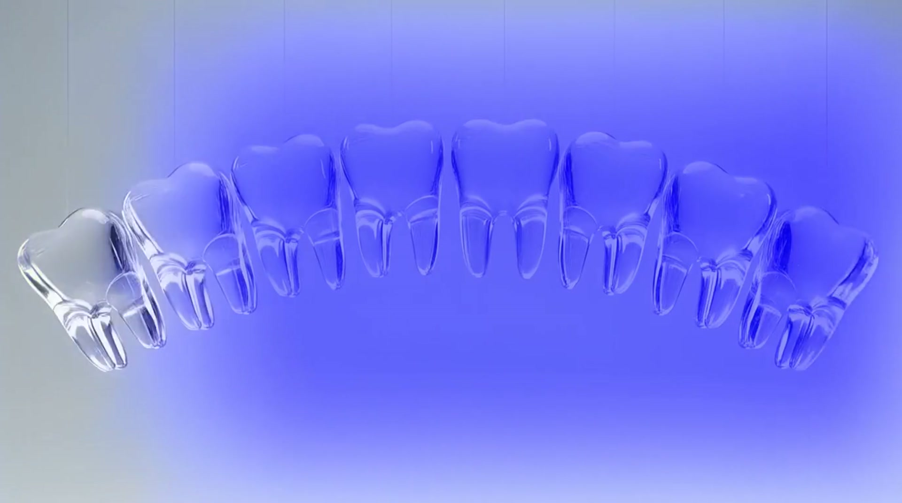
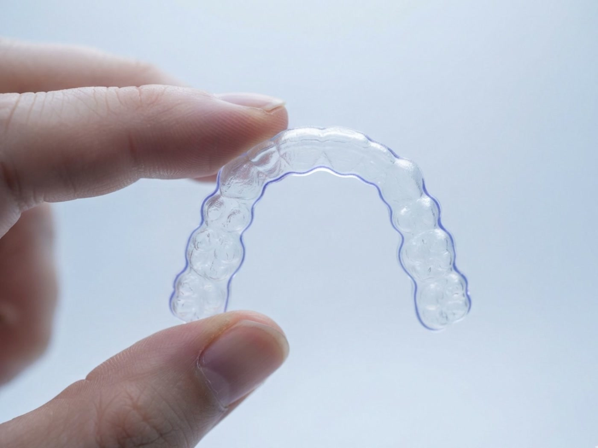
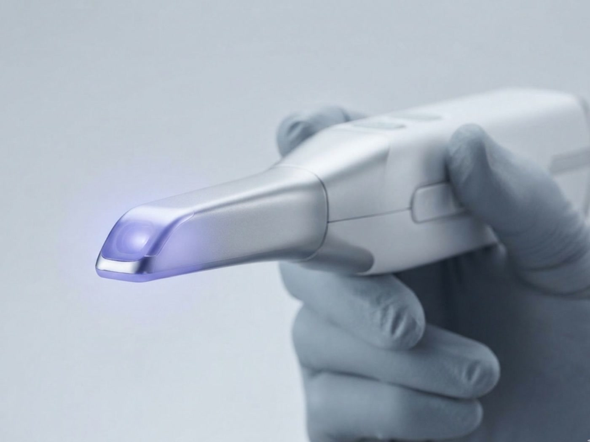
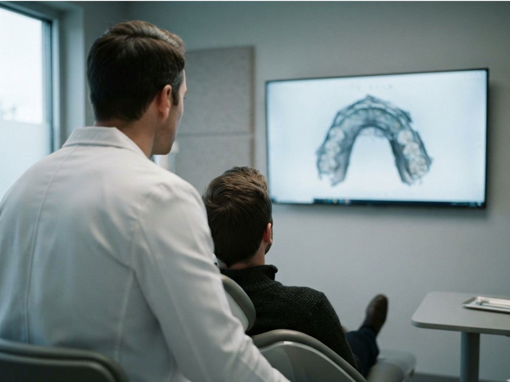
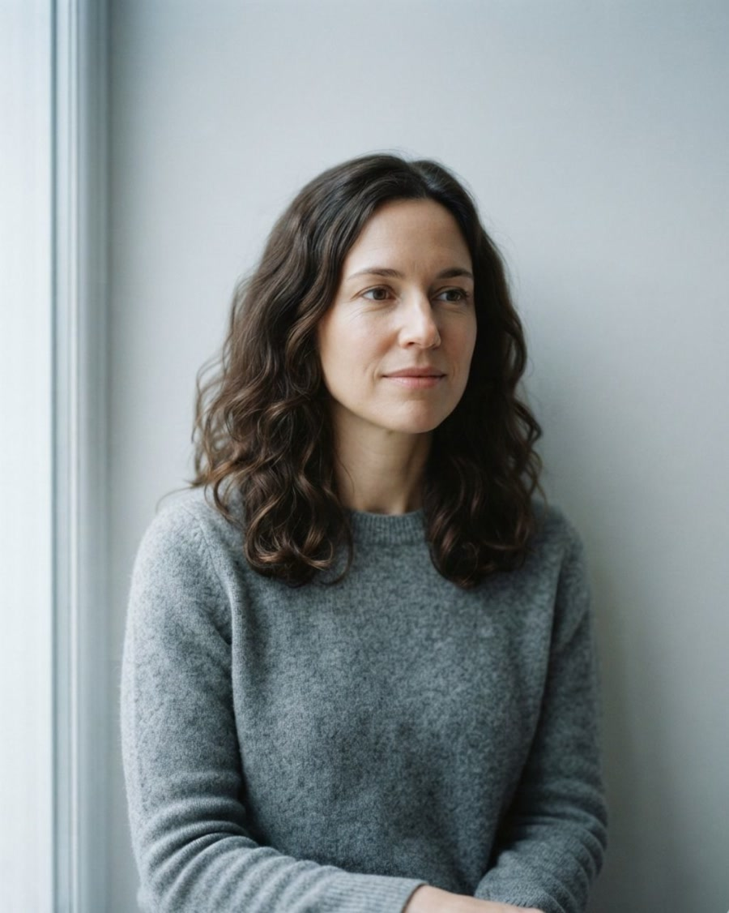
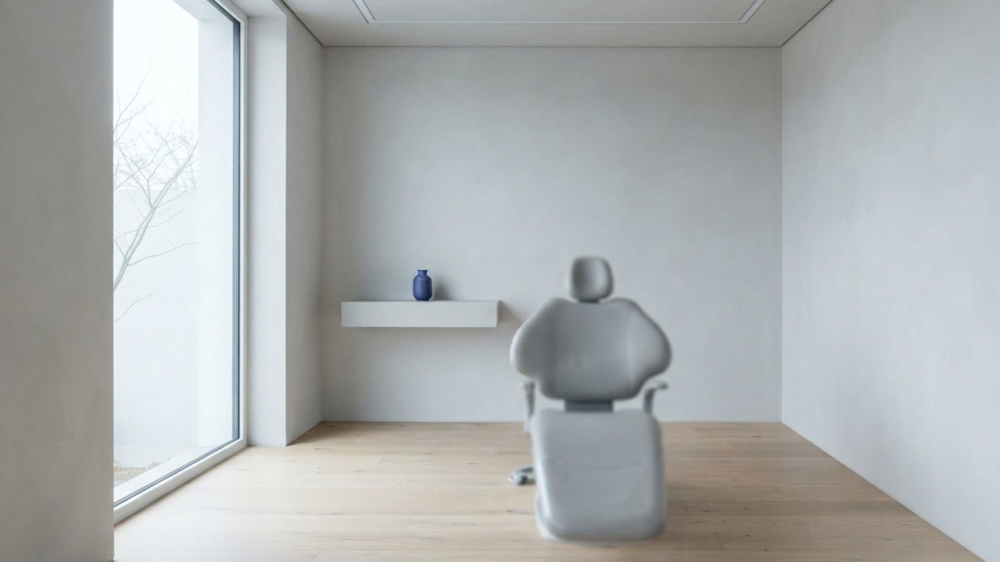

0,25 ммна тиждень
Приблизно з такою швидкістю зуб іде крізь кістку. Швидше не можна: зв'язка не встигає перебудуватись, і корінь починає розсмоктуватись.
Це і лікує вас, і повертає все назад.
Зійтися в ряд це півтора року.
Саме це показують у рекламі.
Розійтися назад це вісім місяців.
Пацієнтка зняла капи раніше. Через рік різці стояли на три міліметри криво.
Зуби рухаються все життя. Питання лише куди.
Ми доводимо ряд до місця і тримаємо його там. Ретейнери й перший рік нагляду вже в сумі курсу.
0,25 ммна тиждень
Приблизно з такою швидкістю зуб іде крізь кістку. Швидше не можна: зв'язка не встигає перебудуватись, і корінь починає розсмоктуватись.
6 до 9місяців твердне кістка
Зуб уже стоїть рівно, а кістка навколо нього ще м'яка. У цей момент курс виглядає завершеним, і саме в цей момент він найкрихкіший.
Рокамипам'ятає зв'язка
Волокна навколо кореня розтягнуті й тягнуть зуб назад. Вони заспокоюються останніми, і не в усіх.
Ось чому ретейнер це не додаткова послуга. Це друга половина того самого лікування.
Затисніть і не відпускайте. Відпустите раніше, побачите, що буде.
0місяців ретенції
Ряд стоїть рівно. Поки що.
Мишею, пальцем або пробілом на клавіатурі.
01
Сканер замість ложки з масою. Того самого дня ви бачите на екрані, куди поїде кожен зуб і скільки кап на це піде. Число кап це і є термін, іншого таймера тут немає.
02
Кожні 7 до 10 днів наступна пара. Приходите раз на два місяці, дивимось, чи ряд іде за планом. Якщо не йде, переробляємо капи, і це вже в сумі.
03
Найважливіший рік з усіх. Тонкий дріт зсередини на нижні різці плюс нічна капа. Оглядаємо чотири рази за рік, це теж у сумі.
04
Скільки саме, чесна відповідь: у більшості людей довше, ніж хочеться. Ми скажемо це на першій зустрічі, а не на останній.

У більшості клінік ретейнер це рядок у прайсі після лікування. Його ставлять, якщо пацієнт спитає.
У нас він у сумі курсу з першого дня, разом із чотирма оглядами першого року, бо без нього все попереднє не має сенсу.
Якщо ретейнер відклеївся або загубився, перший рік ми переставляємо його безкоштовно. Не тому що добрі, а тому що інакше ми зробили половину роботи й узяли за цілу.
Ми не лікуємо все. Ми ставимо ряд і тримаємо його, і робимо це щодня.

Прозорі капи, від 10 до 40 з гаком на курс. Знімаються на їжу, не видно на відео, дикцію чіпають перші три дні.

Сканер знімає рот за десять хвилин. Далі ви дивитесь на екран і бачите кінцеве положення до того, як щось почалось.

Дріт зсередини, нічна капа, огляди. Половина роботи, про яку зазвичай згадують останньою.

Мене одразу попередили, що ретейнер це надовго, і показали на екрані, як зуби поїдуть, якщо його не носити. Мене це радше заспокоїло, ніж злякало. Я знала, на що йду.
Носив капи одинадцять місяців. Найдивніше було те, що на роботі ніхто не помітив. Помітили вже потім, коли все закінчилось.
Мені сорок років казали, що вже пізно. Виявилось, не пізно, просто довше. Другий рік ношу ретейнер уночі, і ряд стоїть так само, як у день, коли зняли останню капу.
Курс визначає не бажання, а скільки кап треба, щоб довести ряд. Це видно на скані в перший день.
58 000₴
10 до 14 кап · до 6 місяців
Невеликий поворот кількох зубів або щілина.
89 000₴
20 до 30 кап · 9 до 14 місяців
Скупчення різців, помірний прикус.
128 000₴
40 і більше кап · 18 до 24 місяців
Виражений прикус, коли зуби треба вести довго й по черзі.
Уже в сумі, у кожному курсі
Ретенція не окремим рядком. Курс без неї ми не продаємо.
Записатися на консультаціюЧисло кап множимо на 7 до 10 днів, і це термін. Він стоїть у плані з першого дня. Якщо ряд іде повільніше, ніж планували, ми переробляємо капи за свій рахунок, а не продовжуємо рахунок.
Перші два роки це наша відповідальність. Якщо ряд зрушив, а ви носили ретейнер і приходили на огляди, ми повертаємо його на місце безкоштовно. Це в договорі.
Чесно: у більшості людей так, уночі. Зв'язка навколо кореня заспокоюється роками, а в частини людей не заспокоюється зовсім. Той, хто обіцяє вам рік і свободу, обіцяє те, чого не контролює.
Ряд піде повільніше, і це буде видно на огляді за два місяці. Ми скажемо прямо, а не мовчки продовжимо курс. Капи працюють лише в роті.
Для більшості випадків різниця в зручності, а не в результаті. Складний прикус іноді швидше й дешевше веде брекет. Ми скажемо це, навіть коли елайнер дорожчий для нас.
Ні. Зуб рухається в будь-якому віці, поки тримається кістка. Довше, обережніше, з ретенцією ще серйознішою, але рухається.
Десять хвилин сканера, і ви бачите на екрані, куди поїде кожен зуб. Це триває годину разом із розмовою і ні до чого не зобов'язує.
